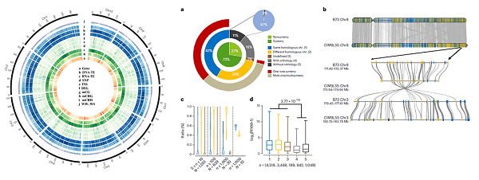

Nat Genet. | 一个优良抗旱玉米种质的基因组组装与遗传剖析
玉米（Zea mays）是重要的粮食作物和饲料作物，同时也是重要的工业原料，并且在世界范围内广泛种植。干旱胁迫会导致作物严重减产，挖掘抗旱种质资源，选育高产抗旱品种可以缓解这一问题。作者在自然群体中筛选出一个具有抗旱特性的玉米种质资源（CIMBL55）。相较于B73和Mo17，CIMBL55具有较高的苗期存活率以及干旱条件下较低的产量损失。
基因组组装和共线性分析
作者结合PacBio三代长读长测序、BioNano光学图谱以及Hi-C测序技术对CIMBL55进行基因组测序组装。通过BUSCO分析以及9个CIMBL55 BAC克隆序列比对，作者验证了其基因组的质量可靠。通过CIMBL55与B73基因组间共线性分析，作者讲CIMBL55基因分成同源染色体共线性基因、非同源染色体重复基因、contigs上的共线性基因、不在共线性block中的直系同源基因和没有直系同源蛋白序列的基因5类。其中属于class 1-3的基因（Synteny）表达量显著高于class 4-5的基因（Noynteny）表达量。

SV鉴定
作者将B73、Mo17和CIMBL55进行比对并鉴定了841,911个SV（>20 bp），在玉米自然群体中鉴定了其中544,853个SVs的基因型。先前在自然群体中利用SNP鉴定的108个抗旱基因中有79个基因的优良等位基因（superior alleles）富集在CIMBL55中。进一步SV基因型进行关联分析，鉴定到69个基因包含和抗旱表型显著关联的SV，其中65个基因的优良单倍型（SNP和SV）富集在CIMBL55中。ZmABF4编码bZIP转录因子，可以调控ABA和干旱诱导的基因表达，在ZmABF4的第二个内含子上鉴定到一个SNP和一个SV，这两个变异和基因表达量、抗旱性显著关联。在自然群体中带有ZmABF4CIMBL55单倍型的个体具有更高的ZmABF4表达量和抗旱性，而且ZmABF4B73超表达植株和野生型相比表现出更高的抗旱性，表明ZmABF4可以正调控玉米抗旱性。
表观基因组变异影响玉米抗旱
根据CIMBL55基因组插入片段（包括0.5-kb-flanking regions）的mCG、mCHG和mCHH甲基化水平使用层次聚类将其分为5类，其中第四类插入片段和flanking regions相比具有更高的甲基化水平，这类插入片段富集了大量DNA-TEs且距离转录起始位点较近。一些NAC-domain-containing transcription factor家族成员对失水胁迫抗性有积极作用。和ZmNAC075CIMBL55相比ZmNAC075B73上游有两个插入片段，这两个片段被超甲基化可能导致ZmNAC075表达量降低进而导致玉米抗旱性降低。
ZmRtn16提高玉米抗旱性
通过比较基因组分析鉴定到ZmRtn16CIMBL55的3′-UTR区域存在一个28 bp缺失片段，带有这一缺失片段的玉米种质具有更高的抗旱性且ZmRtn16表达量更高，同时这一缺失片段可以增强ZmRtn16转录本的稳定性。ZmRtn16超表达株系、crispr敲除株系和野生型对照株系比较分析表明，ZmRtn16可以降低干旱条件下的玉米叶片气孔开度和降低失水率，从而减少干旱条件下的产量损失和增强抗旱性。进一步实验表明，ZmRtn16可以和ZmVHA-A以及ZmVHA-E3互作，促进ZmVHA-A和ZmVHA-E3定位到液泡膜上并增强V-H+-ATPase活性。
原文链接